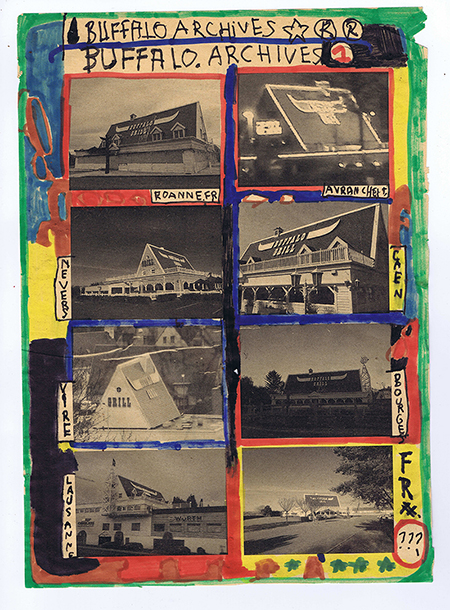
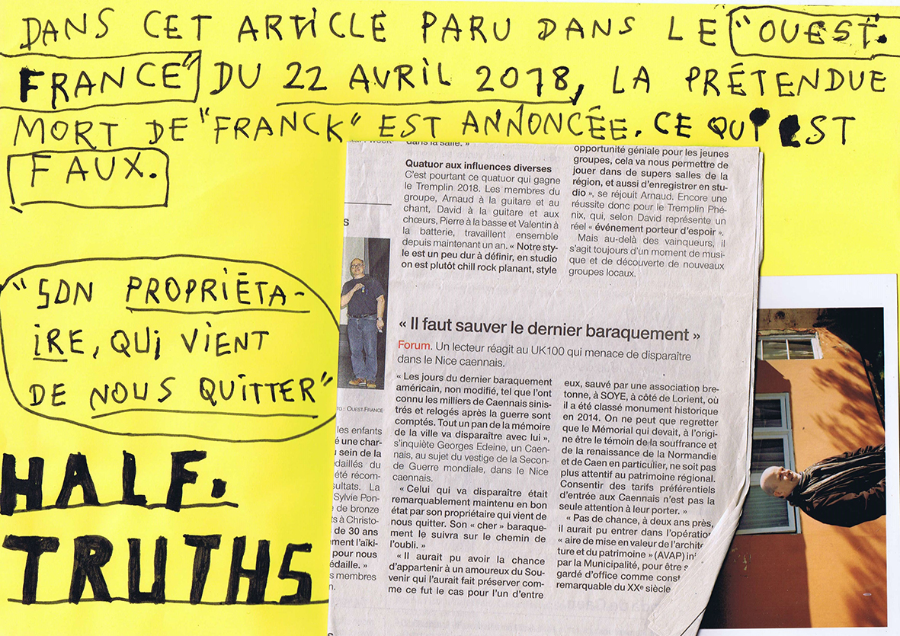
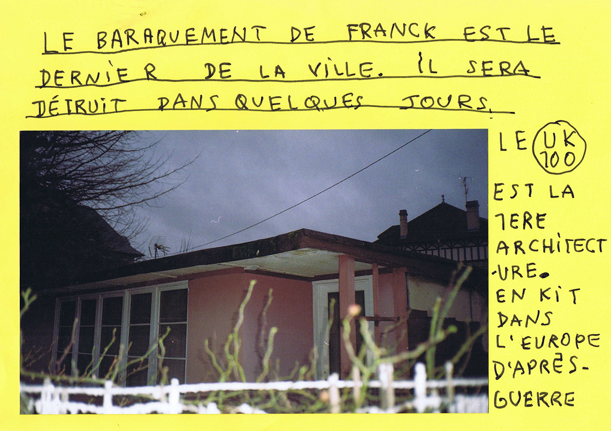

Buffalo Archives, print and felt pens on found paper, 21x29,7cm, 2018
How do you work and develop your style?
I work with different mediums that resonate together: paintings, drawings, sculptures and photography. The collecting gesture allows me to constitute archives of locations, shapes, forms and contexts that I will use.
All the layers of work and mediums leading to something else, need I suppose, to become one in one same other medium, like a book or a lecture. I feel that this is where they function the best, that the use of multiple mediums make sense when they gather in this other medium.
About ‘style’ I don’t know, something that reoccurs is the integration of usually ‘poorly done’ or ‘child like’ hand-written text with images. This text can have multiple functions: it can caption an image, give it a title, but also provoke a shift, a loss or add sense to the image. Also, there is an indirect link with graffiti in my relationship to landscape, as an attitude of appropriation and invading of scenery.
Finally, all these researches that I explained above, this whole (hi)story generates shapes, that are like many possible images, often poor or depreciated, that I can appropriate.
Buffalo Grill is a restaurant chain located along the roadsides in France, actually at the periphery of cities and towns. It’s a leader restaurant group in France and its generic outlooks are inspired by a fantasised American ranch. It is a journey to Disney-world for the price of steak and French fries which explains its popularity. I initiated a sort of self-assignment of capturing all of them with a camera but gave up quickly, now I try to collect all the goodies and derived products from the chain, but also testimonies given by employees about the working conditions there, which sound quite execrable…
 Kissers, ink on paper, 24 x 32cm, 2019
Kissers, ink on paper, 24 x 32cm, 2019
Can you explain how and why your references came to be? How did your references of war find their way into your work?
I try to mix references from my surrounding culture, a culture that is specific to the French suburban landscape, involving architectural elements or the reception of media images. A landscape without real singularity, ‘new’ towns without stories or ‘history’.
Coming from Normandy, the main event that modified this landscape is the allied landing on the coast in 1944. It is almost like the starting point of the local history, a ‘Nativity’. An event that has been heavily promoted in Hollywood productions, like ‘Saving Private Ryan’ or ‘The Longest Day’. The United States, themselves also bombarded cities - sometimes completely - they delivered houses in kit form to rehome bombarded civilians in 1945. Those kit houses ‘the UK 100’ contained all the modern comfort, American style. Those houses are a forgotten heritage falling into ruin. In a more global history, those houses are yet peculiar to this neutral territory: for example they were implemented in Tennessee to accommodate engineers working on the conception of atomic bombs dropped on Hiroshima or Nagasaki…
I research about those moments of local history, of personal stories, in line with the Great History. I am interested in potential fictions given by these American vestige in Normandy and how to pull the strings of the (hi)stories to re-enchant those crisis zones. Also, the memorial tourism of the Second World War became a real business in the area. I grew up surrounded by American and British flags, with people dressing up like soldiers on weekends… This modifies completely our relationship with the real and I try to play with these elements.
So I circumnavigate around the theme of war but also on the war consequences on the cultural and material landscape. I am interested because it was here. Since I am a working class child, if I had grown up in another suburban zone of the area, I would have pulled the strings of history in another way.
 DreamCulture, acrylic on canvas 50x70cm, 2020
DreamCulture, acrylic on canvas 50x70cm, 2020

Half_Truths, extract from La journée des Tours, felt pen, newspaper, 21 x 29,7cm, 2018

UK 100, extract from La journée des Tours, felt pen, photograph, 21x29,7cm, 2018
Can you please tell us about your project and book “La Journée des Tours”, why did investigating and documenting that interest you?
I consider this project like a large story taking as the starting point the announced destruction of the last UK 100 house of the city of Caen. I followed and built a relationship with the inhabitant of this house. This book redraws the story of these houses but also Franck and his family’s story through photography, archive documents and drawings.
At the same time I got interested in the ordinary stories of my grand-parents. My grandmother was working in an automotive parts factory and my grandfather was an amateur painter since he retired from his job in a hardware store. He was a direct witness of the bombardement destroying his city in 1944. So the city was completely rebuilt and he was only painting the pre-war buildings, the everlasting countryside scenes. Those stories are full of digression of the quarter where I grew up. I also mix personal middle school anecdotes with the history of urbanism, local beliefs, like with these dolmens I crossed. This book had a multitude of layers, of depth, small stories intertwining with the bigger history. This work allows me also to approach people, to give them a voice, to let them create shapes.
Two years after the first volume, I realize that almost all the shapes or persons that I mention have disappeared, or have been destroyed. The last UK 100 has been demolished, my grandfather passed away, the HLM housing that I visited were blown up, the social context is more and more tense. There is a sort of urgency to deal with the subjects that I capture, to try to resist to their disintegration by putting them in fictions. This urgency is maybe the reason why I juggle with different mediums.
La Journée des Tours, publication, 21x29,7cm, 2018
If you’re working on something interesting at the moment that you wish to notify people of, here’s a good opportunity to do so:
I am currently artist/researcher with the doctorate program RADIAN. For my research I’m doing the genealogy of the UK 100 houses, which has never really been done in the past. I want to see how they foreshadowed the process of peri-urbanisation, and that there is a direct connection between those stories. I want to understand the aesthetic - social and economical issues; how an artist can make use of fiction to subvert, reconsider, reappropriate those territories from “here” coming from “elsewhere”. At a time of impoverishment of a part of the inhabitants and a lack of representation (seen with the yellow jackets for example) I think it is important to tell the stories of those places.
In parallel I am also working on a movie which will take place between Normandy and Tennessee, a fictive documentary which will redraw let’s say all this suburbian american-normandy history.


 CLARISA
CLARISA